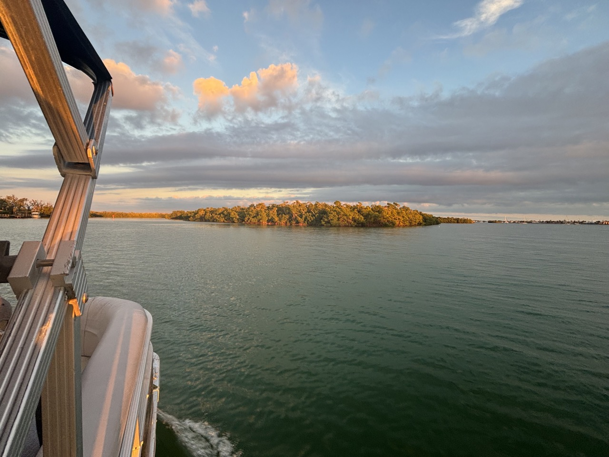
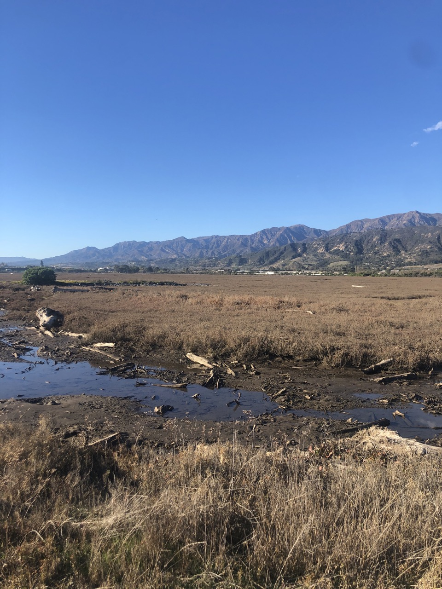

Research projects.
Coastal biogeochemistry · Blue carbon · Science communication




Current Projects
Organic Matter Sulfurization and Pyrite Formation in Blue Carbon Ecosystems
Organic matter sulfurization and pyritization have been proposed as mechanisms that can enhance the carbon sink capacity of blue carbon ecosystems. My research investigates these processes across a range of coastal wetland systems to establish a foundational framework for the field.
In a Southern California salt marsh, I found that pyritization dominates over sulfurization at the study site, though sulfurization appears to be a more spatially consistent process across vegetation zones — with implications for how carbon storage is estimated across different ecosystem types. Evidence for sulfurization is concentrated in the shallowest sediments across multiple vegetation zones, yielding consistent products, while pyritization is more sensitive to shifts in sediment redox conditions.
Complementary work tracing organic sulfur cycling in mangrove ecosystems — from biomass into the dissolved pool — is currently in preparation.
Published in Limnology & Oceanography (2025) →Investigating Blue Carbon Sources and Sinks in Seagrass Meadows of Moorea, French Polynesia
Funded by the Kuni Bren Award, this student-led interdisciplinary project investigates carbon cycling in seagrass meadows around Moorea, combining carbon biogeochemistry, molecular biology, and fish ecology to ask: what roles do fish herbivory, seagrass, and sediment play in carbon cycling across a seagrass-fringing reef interface?
I co-designed and led a two-week international field campaign in French Polynesia coordinating seagrass surveys, sediment carbon sampling, porewater dynamics, and eDNA collection. A manuscript is in preparation.
Understanding Ocean Careers and Climate Optimism Through Podcasting
As part of my doctoral work, I produced multiple seasons of the Ocean Solutions Podcast, interviewing professionals working across ocean science, policy, management, and entrepreneurship in California. The podcast focuses on career pathways and personal stories to broaden listeners' sense of what ocean-related work can look like.
To evaluate the podcast as an educational tool, I led an IRB-approved study assessing its impact on academic engagement and ocean literacy in a collegiate classroom setting. A manuscript reporting these findings is in preparation.
Past Projects
Multi-Scale Variability of Blue Carbon Storage in California Seagrass Meadows
My Master's research investigated carbon storage variability and organic matter sources across three Zostera marina seagrass meadows in California estuaries. I found that carbon storage varies as much within a single meadow as it does across regions, and that sediment grain size (mud content) is the strongest predictor of carbon storage — pointing to the importance of mineral-organic matter interactions in long-term carbon preservation. Approximately one quarter of organic carbon in seagrass sediments was derived from seagrass itself, with the remainder from allochthonous sources.
This work provides the highest spatial resolution study of blue carbon in a seagrass ecosystem and underscores the need for fine-scale spatial data when estimating the carbon sink capacity of individual meadows.
Published in JGR Biogeosciences (2025) →